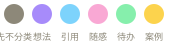

想法09:42
"如果按日期回看灵感，会不会更像回到当天？"
✦ AI 标签：产品 / 内容
深色星云调性、玻璃拟态与低饱和类型族群。覆盖工作台首页 / 灵感记录 / 灵感库三个核心场景，含完整组件库、状态变体与前端可用的 SVG/PNG 资源。
本方案的设计哲学与版式基础
前端可直接复用的 CSS 变量与基础值
shadow-soft
shadow-lift
selected-glow
--ease: cubic-bezier(.2,.7,.3,1)180ms350ms所有组件均带 normal / hover / active / disabled 四种状态
"如果按日期回看灵感，会不会更像回到当天？"
"桂花落在车座上，气味比照片更早把秋天保存下来。"
便利店夜班的灯是"不要过来"还是"随时可以"？两个方向其实只差一块招牌。
中间高亮 = active；上下用 mask 渐隐；滚轮 / 拖动 / 键盘均可用
3 个核心页面 · 实景预览（含完整交互与动效）
① 工作台首页 · home.html
② 记录灵感 · capture.html
③ 灵感库 · timeline.html
21 个图标 · 4 个分组 · SVG 矢量 + PNG @1x/@2x/@3x 位图



assets/svg/capture/type-swatches.svg + assets/png/@Nx/capture__type-swatches.png


CSS 变量、文件命名、组件映射、注意事项
:root {
/* 宇宙背景 */
--cosmos-deep: #07060f;
--cosmos: #0e0c1d;
--cosmos-2: #16142a;
/* 表面（玻璃拟态） */
--surface: rgba(255, 255, 255, 0.04);
--surface-strong: rgba(255, 255, 255, 0.09);
--line: rgba(255, 255, 255, 0.10);
/* 文字 */
--ink: #f5f3ed;
--ink-soft: #d8d4c8;
--ink-muted: #8d8879;
/* 星云主色 = 类型色 */
--nebula-violet: #a78bfa; /* 想法 */
--nebula-blue: #7dd3fc; /* 引用 */
--nebula-rose: #f9a8d4; /* 随感 */
--nebula-mint: #86efac; /* 待办 */
--nebula-amber: #fcd34d; /* 案例 */
--danger: #fca5a5; /* 问题 */
/* 圆角 / 阴影 / 缓动 */
--radius-panel: 20px;
--radius-card: 14px;
--radius-pill: 999px;
--shadow-soft: 0 1px 2px rgba(0,0,0,.3), 0 12px 32px -12px rgba(0,0,0,.5);
--shadow-lift: 0 2px 4px rgba(0,0,0,.4), 0 24px 48px -16px rgba(0,0,0,.6);
--ease: cubic-bezier(.2,.7,.3,1);
}| 类型 | 路径 | 示例 |
|---|---|---|
| SVG 矢量 | assets/svg/<group>/<name>.svg |
assets/svg/capture/record.svg |
| PNG 位图 | assets/png/@<Nx>/<group>__<name>.png |
assets/png/@2x/capture__record.png |
| 分辨率 | @1x = 24px / @2x = 48px / @3x = 72px |
icon 设计基准 24px，描边 1.6 |
前端推荐：图标优先用 SVG（矢量、清晰、可改色）；仅在 PWA / 跨域 / sprite 不可用时使用 PNG。
#e9e6ff（深紫白）；前端可改用 stroke="currentColor" 跟随父级 color。@2x 视觉质量最佳；@1x 用于性能敏感场景，@3x 用于 4K 屏。var(--nebula-violet) 等），PNG 仅作设计参考与离线场景。.fig 文件；本 HTML 文档即"Figma 等效"，可用浏览器打开核对所有页面 / 组件 / 资产。